$ oc version
oc v3.9.40
kubernetes v1.9.1+a0ce1bc657
features: Basic-Auth GSSAPI Kerberos SPNEGO
Server https://master.c3de.rhte.opentlc.com:443
openshift v3.9.40
kubernetes v1.9.1+a0ce1bc657
$ kubectl version
Client Version: version.Info{Major:"1", Minor:"9", GitVersion:"v1.9.1+a0ce1bc657", GitCommit:"a0ce1bc", GitTreeState:"clean", BuildDate:"2018-07-30T20:12:47Z", GoVersion:"go1.9.4", Compiler:"gc", Platform:"linux/amd64"}
Server Version: version.Info{Major:"1", Minor:"9", GitVersion:"v1.9.1+a0ce1bc657", GitCommit:"a0ce1bc", GitTreeState:"clean", BuildDate:"2018-07-30T20:12:47Z", GoVersion:"go1.9.4", Compiler:"gc", Platform:"linux/amd64"}微服务及红帽多产品集成实践
Table of Contents
背景说明
https://redhat.slides.com/ksoong/06_operational_intelligence 有关于此实践案例的详细说明。
总的来说，本部分通过示例(Step by Step) 的方式演示红帽的产品如何应用在微服务架构下。三个纬度去说明红帽微服务多产品集成背景。
单体(Monolith) → 微服务(Microservices)
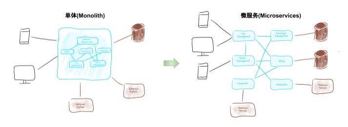
这种架构的变迁有一定的必然性，例如微服务架构带来了架构的灵活性、系统的健壮性等，同时微服务架构需要处理不同的问题，例如复杂内部服务调运模式，分布式设计等。
同步通信(Synchronous Communication) & 异步通信(Asynchronous Communication)
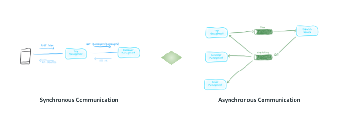
同步通信和异步通信是IT系统架构设计中最常使用的模式，两种模式各有优缺点，微服务架构更需要合理的异步通信模式。
本方案目的说明新架构下红帽产品的使用，具体产品包括：
AMQ 在异步通信方面的能力
AMQ 7 是一个轻量级的消息平台，支持分布式、容器化运行、多种客户端、消息 Stream 等，支持多种协议，能够有效的提供系统异步通信能力，架构示例如下：

-
AMQP 协议主要主要用于跨平台消息通信，例如，C 语言的系统和 Java 语言的系统可以通过 AMQP 进行通信。这种通信同时是在大规模、高扩展性的场景下使用。
-
MQTT 协议是目前物联网 (IoT) 通信的标准。MQTT（消息队列遥测传输） 是基于 TCP/IP 协议栈而构建，是一种轻量级的、灵活的网络协议，致力于为 IoT 提供最优方案，这个轻量级体现在可在严重受限的设备硬件和高延迟/带宽有限的网络上实现，而这个灵活性使得为 IoT 设备和服务的多样化应用场景提供支持成为可能。
案例架构
Acme 公司要启动一个 taxi-hailing 项目，采用了微服务架构，使用了同步和异步的通信模式，一期启动主要有三个服务：
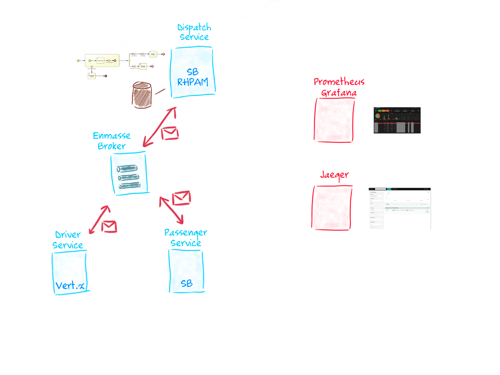
-
Passenger service - 流程驱动的微服务
-
Driver service - 异步式微服务
-
Dispatch service - 基于 Spring Boot 微服务
另外，使用 DevOps 进行微服务开发/运行自动化，Prometheus Grafana、Jaeger 等 Istio 组建用来微服务的追踪与监控。
OpenShift 环境准备
确保 OpenShift 运行，至少 20 GB/8 CPU 资源，oc/kubectl 在本地安装
|
Note
|
OpenShift 安装包括 oc 和 kubectl，如上命令输出可以确认 OpenShift 是运行的，且版本是 v3.9.40，同时与之对应的 Kubernetes 版本是 v1.9.1。 |
代码 Walkthrough
本案例所有代码位置：https://github.com/gpte-rhte2018-msa-orchestration
克隆代码到本地
$ git clone https://github.com/gpte-rhte2018-msa-orchestration/installation.git
$ git clone https://github.com/gpte-rhte2018-msa-orchestration/dispatch-service.git
$ git clone https://github.com/gpte-rhte2018-msa-orchestration/driver-service.git
$ git clone https://github.com/gpte-rhte2018-msa-orchestration/passenger-service.gitDispatch service
Dispatch service 主要是流程驱动的微服务，流程如下：
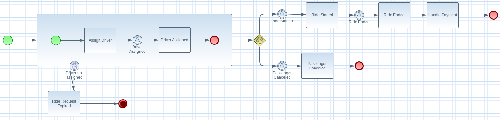
BPMN 流程使用了如下 Task:
-
Signal Event
-
Common Task
-
Timer Event
-
Sub-Process
-
Custom WorkItemHandler
BPM 运行需要持久化、事物处理，模型等。
BPM 运行持久化使用 postgresql 数据库
spring.datasource.username=jboss
spring.datasource.password=jboss
spring.datasource.url=jdbc:postgresql://${postgresql.host}:5432/rhpam
spring.datasource.dbcp2.default-auto-commit=false
spring.datasource.dbcp2.max-total=5
spring.datasource.dbcp2.max-idle=5事物处理使用 narayana
narayana.transaction-manager-id=1
narayana.default-timeout=120
narayana.dbcp.enabled=true
narayana.dbcp.defaultAutoCommit=false
narayana.dbcp.max-total=20流程中使用数据模型
@Entity
@SequenceGenerator(name="RideSeq", sequenceName="RIDE_SEQ")
@Table(name = "Ride")
public class Ride {
@Id
@GeneratedValue(strategy = GenerationType.AUTO, generator="RideSeq")
private long id;
private String rideId;
private String pickup;
private String destination;
private int status;
private BigDecimal price;
private String passengerId;
private String driverId;
//getter and setters
[...]Dispatch service 通过 RHOAR(Spring Boot) 加载嵌入式运行 BPMN
public RuntimeEnvironment runtimeEnvironment(EntityManagerFactory entityManagerFactory,
JtaTransactionManager transactionManager, TransactionalCommandService transactionalCommandService) throws Exception {
RuntimeEnvironmentFactoryBean runtimeEnvironmentFactoryBean = new RuntimeEnvironmentFactoryBean();
runtimeEnvironmentFactoryBean.setType(RuntimeEnvironmentFactoryBean.TYPE_DEFAULT_KJAR_CL);
runtimeEnvironmentFactoryBean.setKbaseName(dispatchProcessKbase);
runtimeEnvironmentFactoryBean.setKsessionName(dispatchProcessKsession);
runtimeEnvironmentFactoryBean.setEntityManagerFactory(entityManagerFactory);
runtimeEnvironmentFactoryBean.setTransactionManager(transactionManager);
runtimeEnvironmentFactoryBean.setRegisterableItemsFactory(registerableItemsFactory());
Map<String, Object> environmentEntries = new HashMap<>();
environmentEntries.put("ExecutorService", executorService(entityManagerFactory, transactionalCommandService));
runtimeEnvironmentFactoryBean.setEnvironmentEntries(environmentEntries);
return (RuntimeEnvironment) runtimeEnvironmentFactoryBean.getObject();
}
@Bean(name = "runtimeManager")
@DependsOn("springContext")
public RuntimeManager runtimeManager(EntityManagerFactory entityManagerFactory, JtaTransactionManager transactionManager,
TransactionalCommandService transactionalCommandService) throws Exception {
RuntimeManagerFactoryBean runtimeManagerFactoryBean = new RuntimeManagerFactoryBean();
runtimeManagerFactoryBean.setIdentifier("spring-rm");
runtimeManagerFactoryBean.setRuntimeEnvironment(runtimeEnvironment(entityManagerFactory,
transactionManager, transactionalCommandService));
runtimeManagerFactoryBean.setType("PER_PROCESS_INSTANCE");
return (RuntimeManager) runtimeManagerFactoryBean.getObject();
}Passenger service
Passenger service 基于 Spring Boot 实现，基于 AMQ 实现异步通信。AMQP 协议用来和 AMQ 进行通信，AMQP Spring Boot 相关配置如下：
amqphub.amqp10jms.remote-url=amqps://${amqp.host}:${amqp.port}?${amqp.query}
amqphub.amqp10jms.username=user
amqphub.amqp10jms.password=password
amqphub.amqp10jms.pool.enabled=true
amqphub.amqp10jms.pool.explicit-producer-cache-size=10
amqphub.amqp10jms.pool.use-anonymous-producers=false
spring.jms.pub-sub-domain=True
spring.jms.transacted=True
spring.jms.subscription-shared=True
spring.jms.subscription-durable=True
spring.jms.listener.concurrency=20
spring.jms.listener.max-concurrency=20Passenger service 消费消息代码如下：
@JmsListener(destination = "${listener.destination.driver-assigned}", subscription= "${listener.subscription.driver-assigned}")
public void processMessage(String messageAsJson) {
[...]
}Driver service
Driver service 基于 Vert.x 实现，基于 AMQ 实现异步通信。AMQP 协议用来和 AMQ 进行通信，AMQP bridge 的实现是在 ConsumerVerticle 的 start() 方法上实现的，具体如下
@Override
public void start(Future<Void> startFuture) throws Exception {
AmqpBridgeOptions bridgeOptions = new AmqpBridgeOptions();
//Handle SSL
bridgeOptions.setSsl(config().getBoolean("amqp.ssl"));
bridgeOptions.setTrustAll(config().getBoolean("amqp.ssl.trustall"));
bridgeOptions.setHostnameVerificationAlgorithm(!config().getBoolean("amqp.ssl.verifyhost") ? "" : "HTTPS");
bridgeOptions.setReplyHandlingSupport(config().getBoolean("amqp.replyhandling"));
// Java Truststore
if (!bridgeOptions.isTrustAll()) {
JksOptions jksOptions = new JksOptions()
.setPath(config().getString("amqp.truststore.path"))
.setPassword(config().getString("amqp.truststore.password"));
bridgeOptions.setTrustStoreOptions(jksOptions);
}
// Create the bridge
bridge = AmqpBridge.create(vertx, bridgeOptions);
String host = config().getString("amqp.host");
int port = config().getInteger("amqp.port");
String username = config().getString("amqp.user", "anonymous");
String password = config().getString("amqp.password", "anonymous");
//Start the bridge
bridge.start(host, port, username, password, ar -> {
if (ar.failed()) {
log.warn("Bridge startup failed");
startFuture.fail(ar.cause());
} else {
log.info("AMQP bridge to " + host + ":" + port + " started");
bridgeStarted();
startFuture.complete();
}
});
}部署到 OpenShift
本部分需要部署案例相关的所有模块，包括消息中间件、数据库、DevOps 工具、微服务等。
Messaging
消息通信还需要考量 SSO、传输加密等，Red Hat SSO，OpenSSL 等组建也使用在本处。
使用 Ansible 部署消息
$ ENMASSE_PRJ=enmasse-82
$ cd files/ansible/
$ ansible-playbook playbooks/enmasse.yml -e project_enmasse=$ENMASSE_PRJ部署成功验证 1/4 - 4 个运行的 Pods
$ oc get pods
NAME READY STATUS RESTARTS AGE
address-space-controller-bb475c559-g658m 1/1 Running 0 3m
agent-794fdb6f95-hmnsz 1/1 Running 0 2m
broker-fd4c858dc-cv8jq 1/1 Running 0 2m
none-authservice-76c94b8575-xb6mx 1/1 Running 0 3m部署成功验证 2/4 - 2 条路由信息
$ oc get routes
NAME HOST/PORT PATH SERVICES PORT TERMINATION WILDCARD
console console-enmasse-82.apps.c3de.rhte.opentlc.com console https passthrough None
messaging messaging-enmasse-82.apps.c3de.rhte.opentlc.com messaging amqps passthrough None部署成功验证 3/4 - 4 个运行的服务
$ oc get svc
NAME TYPE CLUSTER-IP EXTERNAL-IP PORT(S) AGE
broker ClusterIP 172.30.14.114 <none> 55671/TCP 4m
console ClusterIP 172.30.227.178 <none> 8081/TCP 4m
messaging ClusterIP 172.30.86.101 <none> 5672/TCP,5671/TCP 4m
none-authservice ClusterIP 172.30.235.189 <none> 5671/TCP 4m部署成功验证 4/4 - 10 GB 大小的消息持久化存储
$ oc get pvc
NAME STATUS VOLUME CAPACITY ACCESS MODES STORAGECLASS AGE
broker-data Bound vol371 10Gi RWO 4mNOTE：如上验证步骤也可以在图形化 UI 中进行。
Gogs
Gogs 属于 DevOps 工具链中的重要一环，用来存储代码。
使用 Ansible 部署 Gogs
$ TOOLS_PRJ=tools-82
$ cd files/ansible/
$ ansible-playbook playbooks/gogs.yml -e project_tools=$TOOLS_PRJ部署成功验证 1/3 - 2 个运行的 Pods
$ oc get pods
NAME READY STATUS RESTARTS AGE
gogs-1-cwhnw 1/1 Running 0 1m
gogs-postgresql-1-9szxc 1/1 Running 0 2m部署成功验证 2/3 - 2 个运行的服务
$ oc get svc
NAME TYPE CLUSTER-IP EXTERNAL-IP PORT(S) AGE
gogs ClusterIP 172.30.178.96 <none> 3000/TCP 3m
gogs-postgresql ClusterIP 172.30.147.34 <none> 5432/TCP 3m部署成功验证 3/3 - 2 个持久化存储分别关联 Gogs 及其对应的数据库
$ oc get pvc
NAME STATUS VOLUME CAPACITY ACCESS MODES STORAGECLASS AGE
gogs-data Bound vol235 10Gi RWO 3m
gogs-postgres-data Bound vol5 10Gi RWO 3mNOTE：如上验证步骤也可以在图形化 UI 中进行。
pgAdmin4
pgAdmin4 用来管理 PostgreSQL 数据库。
使用 Ansible 部署 pgAdmin4
$ cd files/ansible/
$ ansible-playbook playbooks/pgadmin4.yml -e project_tools=$TOOLS_PRJ部署成功通过如下命令获取 pgAdmin4 登录 URL
$ echo "http://$(oc get route pgadmin4 -o jsonpath='{.spec.host}' -n $TOOLS_PRJ)"
http://pgadmin4-tools-82.apps.c3de.rhte.opentlc.com使用 URL 登录 pgAdmin4（用户名：admin@example.com，密码：admin123）
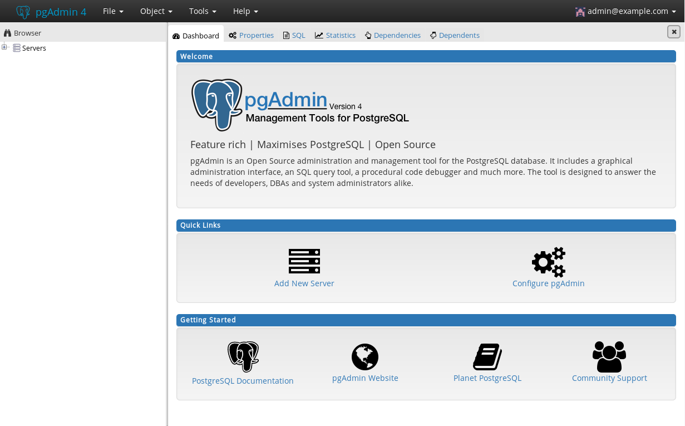
Jenkins
Jenkins 用来 CI/CD 等操作。
使用 Ansible 部署 Jenkins
$ cd files/ansible/
$ ansible-playbook playbooks/jenkins.yml -e project_tools=$TOOLS_PRJ部署成功通过如下命令获取 Jenkins 登录 URL
$ echo "https://$(oc get route jenkins -o jsonpath='{.spec.host}' -n $TOOLS_PRJ)"
https://jenkins-tools-82.apps.c3de.rhte.opentlc.com使用如上 URL 登录
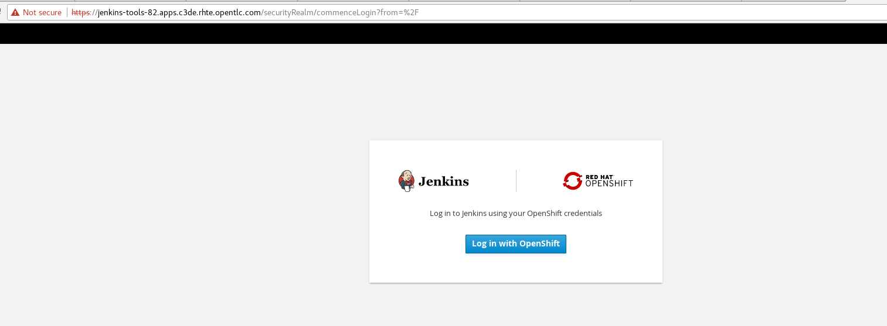
点击 Log in with Openshift 会定位到 OpenShift 登录页面，SSO 登录。
微服务部署
本部分部署三个微服务：dispatch service、driver service、passenger service。
使用 Ansible 部署微服务
$ ENMASSE_PRJ=services-82
$ cd files/ansible/
$ ansible-playbook playbooks/driver_service.yml -e project_enmasse=$ENMASSE_PRJ -e project_tools=$TOOLS_PRJ -e project_services=$SERVICES_PRJ
$ ansible-playbook playbooks/passenger_service.yml -e project_enmasse=$ENMASSE_PRJ -e project_tools=$TOOLS_PRJ -e project_services=$SERVICES_PRJ
$ ansible-playbook playbooks/dispatch_service.yml -e project_enmasse=$ENMASSE_PRJ -e project_tools=$TOOLS_PRJ -e project_services=$SERVICES_PRJ如下命令触发 pipeline 开始自动化部署
$ oc start-build driver-service-pipeline -n $TOOLS_PRJ
$ oc start-build passenger-service-pipeline -n $TOOLS_PRJ
$ oc start-build dispatch-service-pipeline -n $TOOLS_PRJOpenShift Console 中 DevOps Pipeline 如下所示
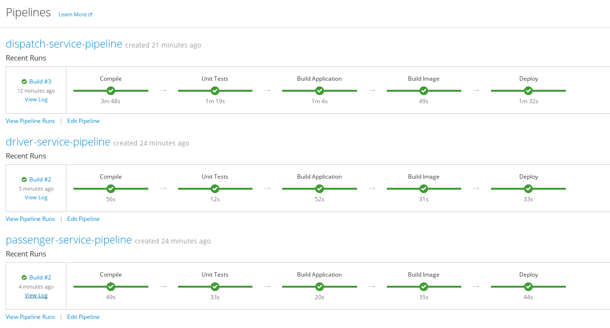
如上 pipeline 显示微服务部署成功，部署过程包括从 Git(Gogs) 拉取代码，S2I，测试、上线等。
案例运行
案例运行三个服务之间通信如下图所示:
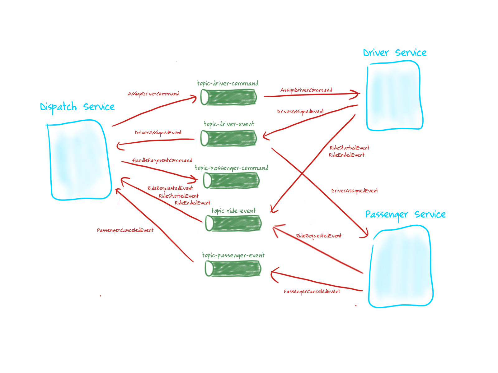
测试运行 - 通过 passenger-service 发送消息
$ PASSENGER_SERVICE_URL=$(echo "http://$(oc get route passenger-service -o jsonpath='{.spec.host}' -n $SERVICES_PRJ)")
$ curl -X POST -H "Content-type: application/json" -d '{"messages": 1, "type": 1}' $PASSENGER_SERVICE_URL/simulate
Sent 1 message(s) with type 1pgAdmin4 查看数据库压力
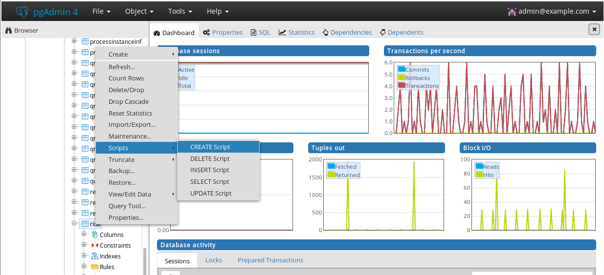
查看 EnMasse console
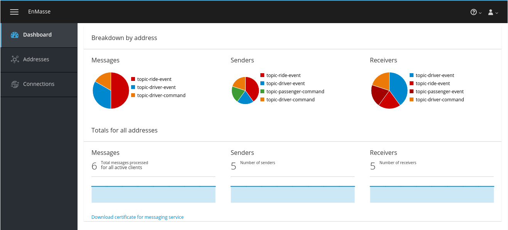
|
Note
|
案例运行测试，还可以通过其它方式进行，例如批量添加等。 |
微服务 Tracing
安装 Jaeger 到 OpenShift
执行如下命令安装 Jaeger
$ cd files/
$ oc process -f openshift/jaeger/jaeger-all-in-one.yaml | oc create -f - -n $TOOLS_PRJ获取 jaeger-query URL
$ echo "https://$(oc get route jaeger-query -o jsonpath='{.spec.host}' -n $TOOLS_PRJ)"
https://jaeger-query-tools-82.apps.c3de.rhte.opentlc.com访问 https://jaeger-query-tools-82.apps.c3de.rhte.opentlc.com 可以进入到 Jaeger UI 。
编辑 Pipleline 指向 Tracing 对应的 Branch
编辑 Pipleline，修改 Git 代码的 Branch 从 master 到 tracing.
...
node ('maven-with-pvc') {
stage ('Compile') {
echo "Starting build"
git url: "${git_url}/${git_repo_app}", branch: "tracing"
def pom = readMavenPom file: 'pom.xml'
version = pom.version
groupId = pom.groupId
artifactId = pom.artifactId
echo "Building version ${version}"
sh "mvn clean compile -Dcom.redhat.xpaas.repo.redhatga=true"
}
...编辑完成后重新执行 Build.
重新运行测试
jaegertracing/jaeger-agent 镜像可以批量产生压力，本部分，部署此镜像，进行带压力测试。
查看 Jaeger UI
重现登录查看 Jaeger UI，可以看到相关的统计数据，如下：
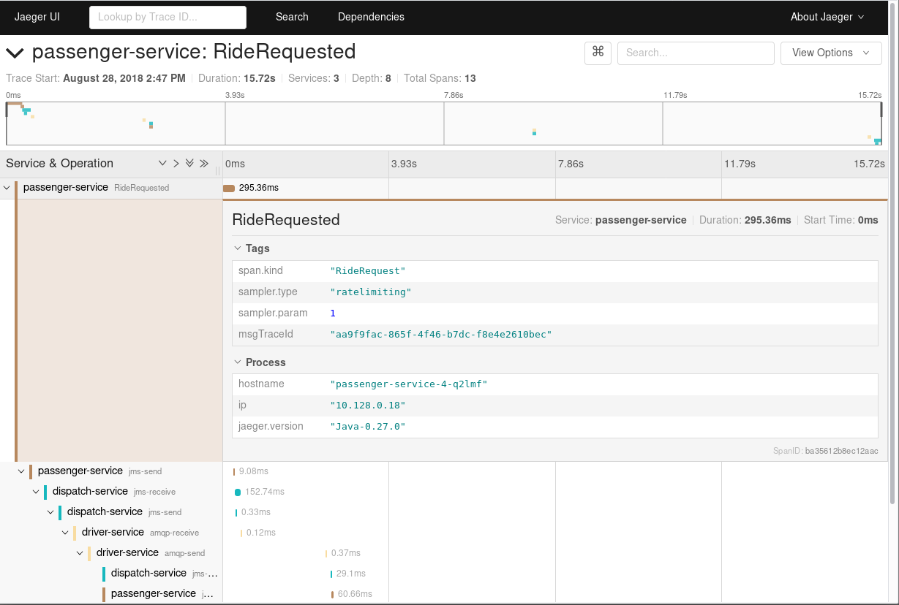
微服务监控
Prometheus 架构
Prometheus 架构如下图所示:
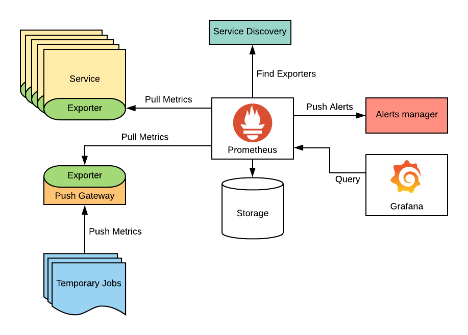
部署 Prometheus 到 OpenShift
执行如下命令部署 Prometheus 到 OpenShift
$ oc create sa prometheus -n $TOOLS_PRJ
$ oc adm policy add-role-to-user view system:serviceaccount:$TOOLS_PRJ:prometheus -n $TOOLS_PRJ
$ oc adm policy add-role-to-user view system:serviceaccount:$TOOLS_PRJ:prometheus -n $ENMASSE_PRJ
$ oc adm policy add-role-to-user view system:serviceaccount:$TOOLS_PRJ:prometheus -n $SERVICES_PRJ
$ oc create configmap prometheus --from-file=openshift/prometheus/prometheus.yaml -n $TOOLS_PRJ
$ oc apply -f openshift/prometheus/prometheus-template.yaml -n $TOOLS_PRJ执行如下命令获取 Prometheus URL
$ echo "http://$(oc get route prometheus -o jsonpath='{.spec.host}' -n $TOOLS_PRJ)"监控 EnMasse broker
查看 artemis_consumer_count metric，点击 ` Execute` 执行
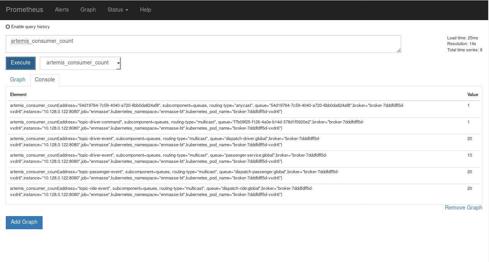
监控微服务
查看微服务 Metric 如下图所示:
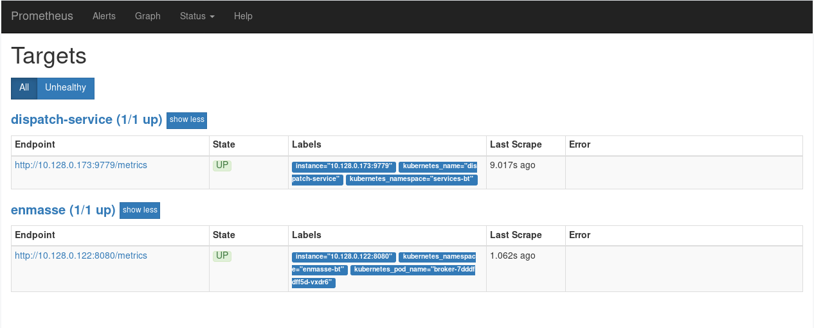
监控 SQL
查看 SQL metrics 如下：
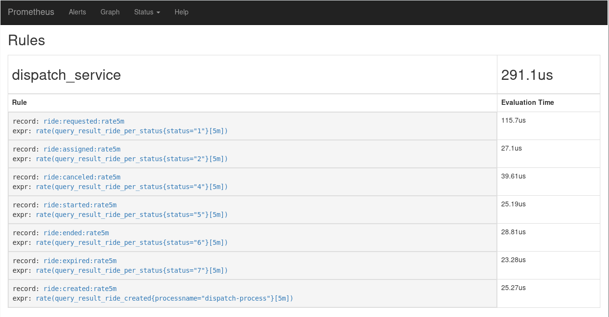
Grafana
The Prometheus UI capabilities to visualize metrics data are quite limited, that’s why Prometheus is often used in combination with Grafana to create dashboards.
部署 Grafana
$ oc create sa grafana -n $TOOLS_PRJ
$ oc create configmap grafana-config --from-file=openshift/grafana/defaults.ini -n $TOOLS_PRJ
$ oc process -f openshift/grafana/grafana.yaml | oc create -f - -n $TOOLS_PRJ查看 Grafana 访问 URL
$ echo "http://$(oc get route grafana -o jsonpath='{.spec.host}' -n $TOOLS_PRJ)"访问查看一些统计数据
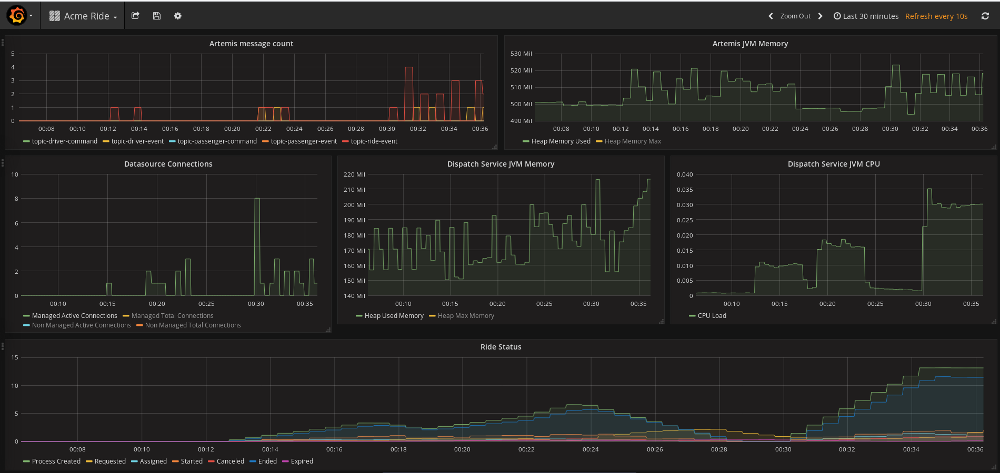